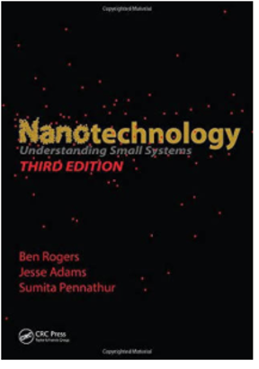
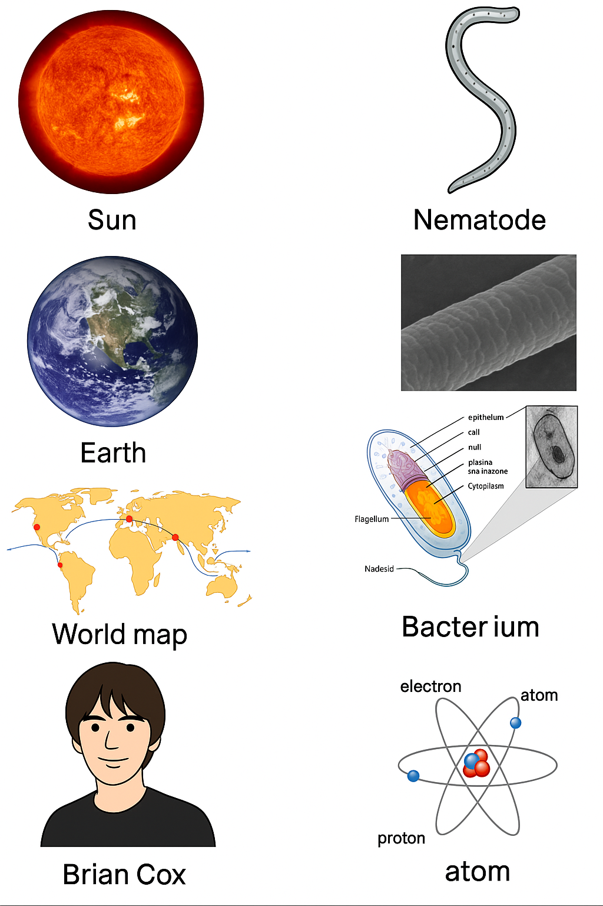
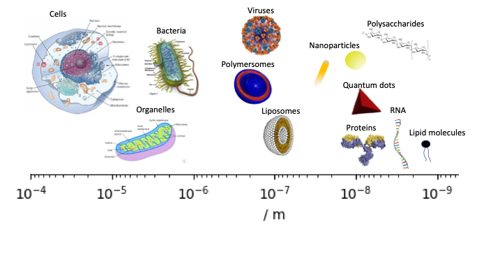

1. Introduction to the Nanotechnology#
From medical applications to quantum computing, the ability to control materials at the nanoscale is transforming how we design and build new technologies. Nanotechnology allows us to manipulate matter at the level of atoms and molecules — typically less than 100 nanometres — where materials often behave in fundamentally different ways. These changes are driving innovation across many sectors, including energy, electronics, healthcare, and materials science.
In this module, we’ll explore some of the exciting applications of nanotechnology, while also grounding our understanding in the scientific principles that make these innovations possible. We’ll begin with some foundational material — much of it extending ideas you’re already familiar with from A-levels or GCSEs (or equivalent) — and build towards an appreciation of how nanoscale science underpins real-world technologies.
Let’s first cover want to expect in this course.
1.1 Course Overview & Objectives#
Gain a basic understanding of:
The structure of atoms
The periodic table and chemical bonding
Nanomaterials and biological materials
Understand the principles of miniaturization and scaling laws.
Explore the structure and behavior of atoms and materials (metals, insulators, semiconductors) and their properties at the nanoscale.
Applications in nanotechnology, nanomaterials, and bionanotechnology.
1.1.1 Course Structure#
Introduction to key concepts:
The scale of the small world: Micrometres to nanometres and below
Scaling laws: Understanding size effects
Nanophysics: Bohr model to Quantum Mechanics
Nanomaterials: Bonding forces from molecules upwards
Nanoelectronics: Metals, Semiconductors, Quantum Confinement
Nanophotonics: Absorption, emission, scattering, and plasmonics
Nanobiotechnology: Cell machinery at the nanoscale
Nanomedicine: Sensors and nanoparticles in the body
1.1.2 Assessment & Study Guidance#
Essay: A 2000-word essay (20% of grade).
Exam: A 2-hour closed-book exam (80% of grade).
Pass threshold: 40%.
Study Plan:
~20 lectures, 2 workshop/revision sessions.
Regular homework (formative and not compulsory).
Private study (~78 hours) including reading, research, essay writing, and revision.
1.1.3 Recommended Textbooks#
Nanotechnology Understanding Small Systems by Ben Roger, Jesse Adams, Sumita Pennathur. 
Fig. 1.2 The main textbook.
Physics for Scientists and Engineers by Paul Tipler.
Fundamentals of Nanotechnology by Kornyak, Moore, Tibbals, and Dutta.
Note
These notes are design to complement the lectures and are not independent of the material presented within the lectures. That said, to the best of my ability I hope to cover the content though these pages, but I will obviously give more context within lectures and ask important questions and make the links which are obvious to me and perhaps not to you. I will aslso add bits of code in places to do some calulcations. It is not part of the course to use or understand python but it might be interesting for some. It is somewhat experimental on my part.
1.2 Nanotechnology Basics#
1.2.1 Understanding the Nanoscale#
“Nano” comes from the Greek “nanos,” meaning dwarf.
In modern use: one-billionth of a meter (10-9 m).
Comparison of scales:  Fig 1.3 Objects of different scale from the Sun to an atom (and Prof. Cox).
Guess the sizes of each object click to uncover the sizes
Object |
Size |
|---|---|
Sun |
~1.4 × 10⁹ m |
Earth |
~1.3 × 10⁷ m |
Distance: London–New York |
~5.6 × 10⁶ m |
Brian Cox (height) |
~1.8 m |
Human hair |
~1 × 10⁻⁴ m |
Nematode (worm) |
~7.5 × 10⁻⁴ m |
E. coli bacterium |
~0.5 × 10⁻⁶ m |
Atom |
~2 × 10⁻¹⁰ m |
It is hard to think about scales much smaller than are usual observations. Our sight is limited to a resolution of 10 to 100 µm. Below is a log scale line showing objects. The nano-scale objects are on the right (the smallest).

Figure 1.4 A scale bar (log-scale) with ojects assocaited with the scale.
1.2.2 Nanotechnology Definition#
Oxford Dictionary: “The branch of technology that deals with dimensions and tolerances of less than 100 nanometres, especially the manipulation of individual atoms and molecules.”
In practice: Manipulating materials on scales between 0.1 - 1000 nm.
1.2.3 Historical Context#
Norio Taniguchi (1974) coined the term “nanotechnology,” highlighting the manipulation of atoms (~0.1 - 0.2 nm).
Richard Feynman (1959): Introduced the concept of tiny machines and storage devices in his lecture “There is Plenty of Room at the Bottom.”
1.2.4 SI Prefixes Relevant to Nanotechnology#
SI Prefixes Table:
| Multiple | Prefix | Symbol |
|---|---|---|
| 10-18 | atto | a |
| 10-15 | femto | f |
| 10-12 | pico | p |
| 10-9 | nano | n |
| 10-6 | micro | μ |
| 10-3 | milli | m |
| 109 | Giga | G |
| 1012 | Tera | T |
1.3 Other Key Reminders#
1 mole (mol is the unit) is \( 6.02214076 \times 10^{23}\) and has the symbol \(N_A\). It is known as Avogadro’s number. You are given it on the front of every exam paper in Physics.
If you have 1 mol of molecules you have \(N_A\) molecules (which is still a very large number).
mol can be prefixed with ‘m’ which is mmol ( millimoles).
If you know the molecular (or atomic weight) of a substance it is in units of grams per mol (\(g\text{mol}^{-1}\)) then you can work out the number of moles. Divide the mass of the substance by the molecular weight (MW) gives the number of moles of the substance. There is nothing tricky here, but if you are confused do revise this.
\(\text{moles}=\frac{\text{mass}}{\text{MW}}\)
If we divide the number of moles by the volume in litres we get the ‘molar’ concentration.
\(\text{concentraction}=\frac{\text{moles}}{V}\)
Sub in from above:
\(\text{concentraction}=\frac{\text{mass}}{\text{MW} \times V}\)
Some say this is chemsitry, and not physics, but this is not true. We also need to deal with concentrations, molecular weights, and density for physics models and understanding. Afterall they are pretty basic equations, just check your units.
1.4 Key Takeaways on Nanotechnology#
A rapidly growing field with vast potential but requires caution against overhyped promises.
Enables manipulation of materials at atomic and molecular scales to create new functionalities and applications.
Nanotechnology is being researched across many fields to address global challenges and create innovative products:
Medicine: Development of advanced drug delivery systems, cancer therapies, and diagnostic tools for targeted treatments.
Environmental Applications: Creation of nanomaterials for pollution remediation, water purification, and sustainable energy solutions like efficient solar cells and batteries.
Electronics: The rise of nanoelectronics for smaller, faster, and more efficient devices, improving computing power and data storage.
Materials Science: Development of stronger, lighter, and more durable materials (e.g., carbon nanotubes, graphene) for use in construction, aerospace, and sports.
Food & Agriculture: Use of nanosensors for monitoring food quality and precision agriculture to enhance crop yield and reduce waste.
Nanotechnology is paving the way for breakthroughs that can improve health, sustainability, and technological advancements globally.
While there are many new developments it is also important to realise what the current limitations, what are the ethical concerns, and what are the potential negative impacts.
In the next lecture will will consider miniturisation and ask why it is important before going on to look at Scaling Laws.
1.5 References#
Laroui, H.; Wilson, S.; Dalmasso, G.; et al. American journal of physiology. Gastrointestinal and liver physiology 2010, 300, G371-383.
Praful, P. et al. Int. J. Pharm. Sci. Rev. Res.,2017, 46(2),13, 66-76
Wilson, R. https://www.electronicsweekly.com/news/research-news/device-rd/in-pictures-a-smart-contact-lens-monitors-the-eye-2010-03/ Accessed 15th May 2025
Rajput, P.; Sinha, R. K.; Devi, P. Chapter 9 - Materials in surface-enhanced Raman spectroscopy-based detection of inorganic water pollutants. In Inorganic Pollutants in Water, Devi, P., Singh, P., Kansal, S. K. Eds.; Elsevier, 2020; 153-172.
McCay, P https://www.patrickmccray.com/leaping-robot/2013/05/21/atoms-to-art Accessed 15th May 2025
https://physioweb.uvm.edu/warshaw-lab/research-interests/intracellular-cargo-transport/ Accessed 15th May 2025
Tahan, C. https://research.tahan.com/2010/09/27/qubit-relaxation-in-a-silicon-quantum-dot/ Accessed 15th May 2025
https://en.m.wikipedia.org/wiki/File:EFluor_Nanocrystal_Vials.jpg Accessed 15th May 2025
https://phys.org/news/2015-11-tandem-solar-cells-efficient.html Accessed 15th May 2025
{kind=link}